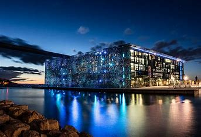
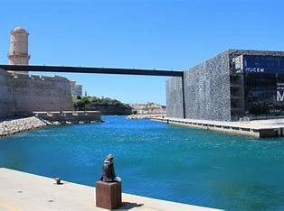
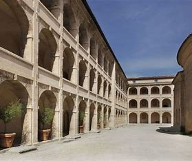
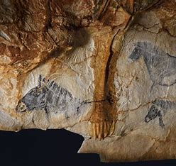

Découvrez Marseille à travers ses Musées
Top 10 des Musées à visiter à Marseille

Musée d’histoire de Marseille:

Ce musée est très riche, et sa visite est très agréable.
info
Mucem:

Très bon musée, beau bâtiment avec de belles expositions permanentes.info
Centre de la Vieille Charité:

info
Musée d’Archéologie Méditerranéenne:

Cet édifice situé dans le plus vieux quartier de Marseille.info
Cosquer Méditerranée:

Visite très intéressante en trois parties. La reconstitution est impressionnante.info
Musée Des Beaux Arts:

info
Friche la Belle de Mai:

info
Musée du savon de Marseille & Savonnerie du Midi:

info
Musée des Docks Romains:

Château Borély, Musée des Arts décoratifs, de la Faïence et de la Mode:
Situé dans un magnifique château, ce musée présente une collection d’arts décoratifs, de faïence et de mode.info